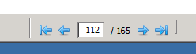

Pdf4Eclipse
Pdf4Eclipse is a pdf viewer which integrates nicely into the Eclipse workbench.
Navigation
To navigate in a pdf document you can use the keyboard or the mouse wheel.
Besides that it is possible to jump to a specific page number by entering it
into the page field in the status bar.

Outline
If it is included in the pdf document, Pdf4Eclipse can show the bookmarks
(often more like a table of contents) of the document in the Outline view.
You can directly jump to a specific bookmark by selecting it in the outline.

Annotations
Another possibility to navigate in a pdf is by using annotations which are
marked by a red frame in the document. By clicking inside this frame you go
to the specified location. This could also be a web page in which case a
browser window is opened.
You can always go back to the last position by using the navigation buttons
in the task bar or the corresponding entries in the Navigate-Menu.
The highlighting of annotations can be turned on and off
by a button in the task bar.

Zoom
You can change the presentation of the pdf by changing the zoom factor with the
buttons on the task bar or '+' and '-' keys.